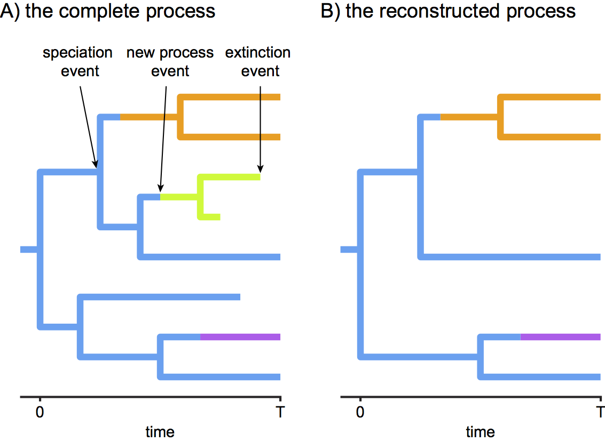
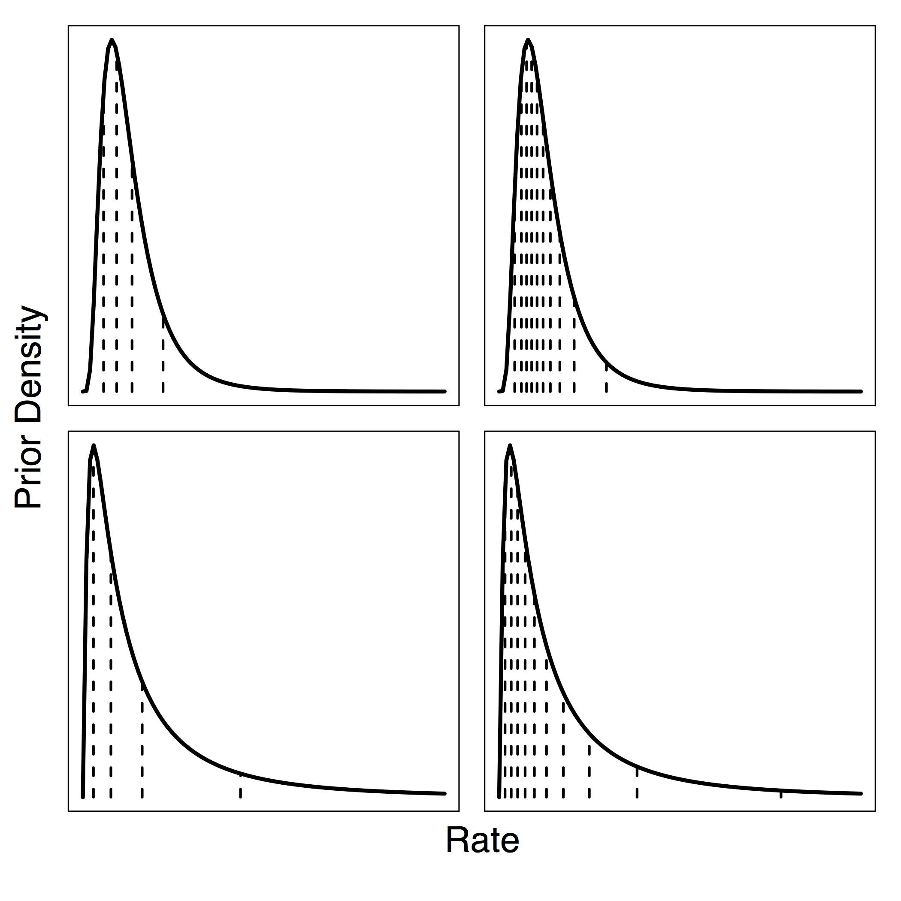

Outline: Estimating Branch-Specific Speciation & Extinction Rates
This tutorial describes how to specify a branch-specific branching-process models in RevBayes; a birth-death process where diversification rates vary among branches, similar to (Rabosky 2014). The probabilistic graphical model is given for each component of this tutorial. The goal is to obtain estimate of branch-specific diversification rates using Markov chain Monte Carlo (MCMC).
Branch-Specific Birth-Death Model

The basic idea behind the model is that speciation and extinction rates
are allowed to vary across branches of the tree (see
). Unfortunately, it is not possible to model rates drawn
from a continuous distribution directly, as done for example in
BAMM, because in that case one needs to integrate over
any number of possible rate shifts, any time of these shifts and most
importantly over all possible new rates. This is unfeasible to do and
failure to do so has been shown to make parameter estimates unreliable
(Moore et al. 2016).

Here we adopt an approach using (few) discrete rate categories instead. This allows us to numerically integrate over all possible rate categories using a system of differential equation originally described by (Maddison et al. 2007) (see also (FitzJohn et al. 2009) and (FitzJohn 2010)). The numerical procedure beaks time into very small time intervals and sums over all possible events occurring in that interval (see ).
You don’t need to worry about any of the technical details. It is important for you to realize that this model assumes that new rates at a rate-shift event are drawn from a given (discrete) set of rates.
In RevBayes we have two implementations
(i.e., distributions) for modeling a
branch-specific birth-death process. The first distribution is the
dnBirthDeathMultiRate (or its alias dnMRBDP) and the second is the
dnHeterogeneousBirthDeath (or its alias dnHBDP). We have designed
this tutorial so that each section can be read independently although we
recommend that you work through both of them. You will find that some
parts are redundant, which is intentional to emphasize the similarities
between the analysis but also to make the sections independent.
Testing for Branch-Specific-Diversification Rates
In this first exercise we are interested in knowing if there is diversification-rate variation among branches for our study tree. That is, we want to see if we can reject a constant rate birth-death process. Therefore, we don’t focus on branch-specific parameter estimates but instead on the marginal likelihood estimation for model testing.
We assume that you have completed the RB_BasicDiversificationRate_Tutorial to estimate the marginal likelihood under a constant-rate birth-death process. If you haven’t done so, then you should go back and do this now!
Read the tree
Begin by reading in the observed tree.
observed_phylogeny <- readTrees("data/primates_tree.nex")[1]
From this tree, we can get some helpful variables:
taxa <- observed_phylogeny.taxa()
root <- observed_phylogeny.rootAge()
tree_length <- observed_phylogeny.treeLength()
Additionally, we can initialize an iterator variable for our vector of moves and monitors:
mvi = 0
mni = 0
Finally, we create a helper variable that specifies the number of discrete rate categories, another helper variable for the expected number of rate-shift events, the total number of species, and the variation in rates.
NUM_RATE_CATEGORIES = 4
EXPECTED_NUM_EVENTS = 2
NUM_TOTAL_SPECIES = 367
H = 0.587405
Using these variables we can easily change our script, for example, to
use more or fewer categories and test the impact. For example, setting
NUM_RATE_CATEGORIES = 1 gives the constant rate birth-death process.
Specifying the model
Priors on rates

sd
$=0.587405$) and the bottom plots have the 95% probability interval
spanning two orders of magnitude (sd $=2*0.587405$) .Instead of using a continuous probability distribution we will use a
discrete approximation of the distribution, as done for modeling rate
variation across sites (Yang 1994) and for modeling relaxed molecular
clocks (Drummond et al. 2006). That means, we assume that the speciation rates
are drawn from one of the $N$ quantiles of the lognormal distribution.
For this we will use the function fnDiscretizeDistribution which takes
in a distribution as its first argument and the number of quantiles as
the second argument. The return value is a vector of quantiles. We use
it as a deterministic variable and every time the parameters of the base
distribution (i.e., the lognormal
distribution in our case) change the quantiles will update automatically
as well. Thus we only need to specify parameters for our base
distribution, the lognormal distribution. We choose a stochastic
variable for the mean parameter of the lognormal distribution drawn from
yet another lognormal prior distribution. We fix the prior mean on this
mean speciation rate on our expected diversification rate, which is
. Remember that the median of a
lognormal distribution is equal to the exponential of the mean
parameter. This is why we used a log-transform of the actual mean. This
prior density is analogous to the prior on the speciation-rate parameter
in the constant-rate birth-death process.
speciation_prior_mean <- ln( ln(NUM_TOTAL_SPECIES/2.0) / root )
speciation_mean ~ dnLognormal(mean=speciation_prior_mean, sd=H)
moves[++mvi] = mvScale(speciation_mean,lambda=1,tune=true,weight=5)
Additionally, we choose a fixed standard deviation of $2H$ ($0.5874052$) for the speciation rates because it represents two orders of magnitude variance in the rate categories.
speciation_sd <- 2*H
speciation_categories := fnDiscretizeDistribution( dnLognormal(ln(speciation_mean), speciation_sd), NUM_RATE_CATEGORIES )
We also need discretized extinction-rate categories. We are completely free to choose how we construct these rate categories. For example, we could choose a similar discretization of a lognormal distribution using its quantiles to provide different extinction-rate categories. For simplicity, this is how we specify the current model. Alternatively, we could assume that each rate category has the same extinction rate.
extinction_prior_mean <- ln( ln(NUM_TOTAL_SPECIES/2.0) / root )
extinction_mean ~ dnLognormal(mean=extinction_prior_mean,sd=2*H)
moves[++mvi] = mvScale(extinction_mean,lambda=1.0,tune=true,weight=3.0)
As with the speciation rate, we discretize the lognormal distribution into a finite number of rate categories.
extinction_categories := fnDiscretizeDistribution( dnLognormal(ln(extinction_mean), H), NUM_RATE_CATEGORIES )
Now, we must create a vector that contains each combination of speciation- and extinction-rates. This allows the rate of speciation to change without changing the rate of extinction and vice versa. The resulting vector should be $N^2$ elements long. We call these the `paired’ rate categories.
k = 1
for(i in 1:NUM_RATE_CATEGORIES) {
for(j in 1:NUM_RATE_CATEGORIES) {
speciation[k] := speciation_categories[i]
extinction[k++] := extinction_categories[j]
}
}
Next, we need a rate parameter for the rate-shifts events. We do not
have much prior information about this rate but we can provide some
realistic ranges. For example, we can specify a mean rate so that the
resulting number of expected rate-shift events is 2 (as specified in our
global variable EXPECTED_NUM_EVENTS). Furthermore, we can say that
the 95% prior ranges exactly one order of magnitude. We achieve all this
by specifying a lognormal prior distribution with mean ln(
EXPECTED_NUM_EVENTS/tree_length ) and standard deviation of H.
Remember that this is only possible if the tree is known and not
estimated simultaneously because only if the tree is do we also know the
tree length. As usual for rate parameter, we apply a scaling move to the
event_rate variable.
event_rate ~ dnLognormal( ln( EXPECTED_NUM_EVENTS/tree_length ), H)
moves[++mvi] = mvScale(event_rate,lambda=1,tune=true,weight=5)
Additionally, we need a rate-matrix parameter providing the relative rates between paired rate categories. In this case we simply use equal rates between each rate category; and thus use the Jukes-Cantor rate matrix. You could, for example, also use an ordered rate matrix where the process needs to go through rate 2 before going to rate 3 when starting in rate 1.
rate_matrix <- fnJC( NUM_RATE_CATEGORIES * NUM_RATE_CATEGORIES )
Furthermore, we need prior probabilities for the process being in either paired rate category at the root. Given our lack of prior knowledge we create a flat prior distribution giving each rate category equal weight. We do this by create a constant variable using the simplex function.
rate_category_prior <- simplex( rep(1, NUM_RATE_CATEGORIES * NUM_RATE_CATEGORIES) )
Incomplete Taxon Sampling
We know that we have sampled 233 out of 367 living primate species. To account for this we can set the sampling parameter as a constant node with a value of 233 / 367.
rho <- observed_phylogeny.ntips() / NUM_TOTAL_SPECIES
Root age
The birth-death process requires a parameter for the root age. In this
exercise we use a fix tree and thus we know the age of the tree. Hence,
we can get the value for the root from the (Magnuson-Ford and Otto 2012) tree. This
is done using our global variable root defined above and nothing else
has to be done here.
The time tree
Now we have all of the parameters we need to specify the full episodic birth-death model. We initialize the stochastic node representing the time tree.
timetree ~ dnMRBDP(lambda=speciation, mu=extinction, Q=rate_matrix, rootAge=root, rho=rho, pi=rate_category_prior, delta=event_rate, taxa=taxa)
And then we attach data to it.
timetree.clamp(observed_phylogeny)
Finally, we create a workspace object of our whole model using the
model() function.
mymodel = model(speciation)
The model() function traversed all of the connections and found all of
the nodes we specified.
Running a marginal likelihood estimation
Specifying Monitors
For the marginal likelihood analysis we don’t necessarily need monitors because we are not going to look into the samples. However, as good practice we still define our two standard monitors: the model monitor and a screen monitor
monitors[++mni] = mnModel(filename="output/primates_MRBD.log",printgen=10, separator = TAB)
monitors[++mni] = mnScreen(printgen=10, diversification_mean, turnover)
Initializing and Running the MCMC Simulation
If you don’t feel comfortable with Bayesian model selection anymore, then have a look at the RB_BayesFactor_Tutorial again.
First, we create the variable containing the power posterior. This
requires us to provide a model and vector of moves, as well as an output
file name. The cats argument sets the number of power steps.
pow_p = powerPosterior(mymodel, moves, "output/MRBD_powp.out", cats=100)
We can start the power posterior by first burning in the chain and and discarding the first 5000 states.
pow_p.burnin(generations=5000,tuningInterval=200)
Now execute the run with the .run() function:
pow_p.run(generations=2000)
Once the power posteriors have been saved to file, create a stepping-stone sampler. This function can read any file of power posteriors and compute the marginal likelihood using stepping-stone sampling.
ss = steppingStoneSampler(file="output/MRBD_powp.out", powerColumnName="power", likelihoodColumnName="likelihood")
Compute the marginal likelihood under stepping-stone sampling using the
member function marginal() of the ss variable and record the value
in Table [tab:ss].
ss.marginal()
Path sampling is an alternative to stepping-stone sampling and also takes the same power posteriors as input.
ps = pathSampler(file="output/MRBD_powp.out", powerColumnName="power", likelihoodColumnName="likelihood")
Compute the marginal likelihood under stepping-stone sampling using the
member function marginal() of the ps variable and record the value
in Table [tab:ss].
ps.marginal()
The Rev file for performing this analysis:
ml_MRBD.Rev.
Exercise 1
-
Enter the marginal likelihood estimate from the previous exercise on the constant-rate birth-death process in the table below.
-
Compute the marginal likelihood under the 2-rate model, i.e., set the NUM_Rate_CATEGORIES variable to 2.
-
Repeat the estimation of the marginal likelihoods with other number of rate categories to fill out the table.
-
What is the most supported model? Can we reject the constant-rate birth-death process?
| Model | Path-Sampling | Stepping-Stone-Sampling |
|---|---|---|
| constant-rate ($N=1$) | ||
| two rate ($N=2$) | ||
| four rate ($N=4$) | ||
| six rate ($N=6$) |
Estimating Branch-Specific Diversification Rates
In this second analysis we are interested in estimating the
branch-specific diversification rates. We are going to use a very
similar model to the one described in the previous section. However, now
we are going to use the dnHBDP distribution instead which will require
some slightly different parameterization and moves. The main difference,
as mentioned above, is that the dnHBDP uses a data-augementation
scheme to sample the locations and parameters of rate-shift events
across branches of the tree.
Read the tree
Begin by reading in the observed tree.
observed_phylogeny <- readTrees("data/primates_tree.nex")[1]
From this tree, we can get some helpful variables:
taxa <- observed_phylogeny.taxa()
root <- observed_phylogeny.rootAge()
tree_length <- observed_phylogeny.treeLength()
Additionally, we can initialize an iterator variable for our vector of moves:
mvi = 0
mni = 0
Finally, we create a helper variable that specifies the number of discrete rate categories, another helper variable for the expected number of rate-shift events, the total number of species, and the variation in rates.
NUM_RATE_CATEGORIES = 4
EXPECTED_NUM_EVENTS = 2
NUM_TOTAL_SPECIES = 367
H = 0.587405
Using these variables we can easily change our script, for example, to use more or fewer categories and test the impact.
Specifying the model
Priors on rates
Similar the previous section, we will set up the rate categories using the exact same model and Rev syntax. Thus, we first create our hyper-prior on the mean speciation rate, which is drawn from a lognormal distribution.
speciation_prior_mean <- ln( ln(NUM_TOTAL_SPECIES/2.0) / root_age )
speciation_mean ~ dnLognormal(mean=speciation_prior_mean, sd=H)
moves[++mvi] = mvScale(speciation_mean,lambda=1,tune=true,weight=5)
Additionally, we choose a fixed standard deviation of $H * 2$ for the speciation rates because it represents two orders of magnitude variance in the rate categories.
speciation_sd <- H*2
speciation_categories := fnDiscretizeDistribution( dnLognormal(ln(speciation_mean), speciation_sd), NUM_RATE_CATEGORIES )
We define the prior on the extinction rate in the same way as we did for the speciation rate, with the only difference that we allow for two orders of magnitude of uncertainty.
extinction_prior_mean <- ln( ln(NUM_TOTAL_SPECIES/2.0) / root_age )
extinction_mean ~ dnLognormal(mean=extinction_prior_mean,sd=H*2)
moves[++mvi] = mvScale(extinction_mean,lambda=1.0,tune=true,weight=3.0)
As with the speciation rate, we discretize the lognormal distribution into a finite number of rate categories.
extinction_categories := fnDiscretizeDistribution( dnLognormal(ln(extinction_mean), H), NUM_RATE_CATEGORIES )
Now, we must create a vector that contains each combination of speciation- and extinction-rates. This allows the rate of speciation to change without changing the rate of extinction and vice versa. The resulting vector should be $N^2$ elements long. We call these the `paired’ rate categories.
k = 1
for(i in 1:NUM_RATE_CATEGORIES) {
for(j in 1:NUM_RATE_CATEGORIES) {
speciation[k] := speciation_categories[i]
extinction[k++] := extinction_categories[j]
}
}
Next, we need a rate parameter for the rate-shifts events. We do not
have much prior information about this rate but we can provide some
realistic ranges. For example, we can specify a mean rate so that the
resulting number of expected rate-shift events is 2 (as specified in our
global variable EXPECTED_NUM_EVENTS). Furthermore, we can say that
the 95% prior ranges exactly one order of magnitude. We achieve all this
by specifying a lognormal prior distribution with mean ln(
EXPECTED_NUM_EVENTS/tree_length ) and standard deviation of H.
Remember that this is only possible if the tree is known and not
estimated simultaneously because only if the tree is do we also know the
tree length. As usual for rate parameter, we apply a scaling move to the
event_rate variable.
event_rate ~ dnLognormal( ln( EXPECTED_NUM_EVENTS/tree_length ), H)
moves[++mvi] = mvScale(event_rate,lambda=1,tune=true,weight=5)
Additionally, we need a parameter for the category of the process at root. We use a uniform prior distribution on the indices 1 to $N^2$ since we do not have any prior information in which rate category the process is at the root. The move for this random variable is a random integer walk because the random variable is defined only on the indices (i.e., with real number).
root_category ~ dnUniformNatural(1,NUM_RATE_CATEGORIES * NUM_RATE_CATEGORIES)
moves[++mvi] = mvRandomIntegerWalk(root_category,weight=1)
Incomplete Taxon Sampling
We know that we have sampled 233 out of 367 living primate species. To account for this we can set the sampling parameter as a constant node with a value of 233 / 367.
rho <- observed_phylogeny.ntips() / NUM_TOTAL_SPECIES
Root age
The birth-death process requires a parameter for the root age. In this
exercise we use a fix tree and thus we know the age of the tree. Hence,
we can get the value for the root from the (Magnuson-Ford and Otto 2012) tree. This
is done using our global variable root defined above and nothing else
has to be done here.
The time tree
Now we have all of the parameters we need to specify the full branch-specific birth-death model. We initialize the stochastic node representing the time tree.
timetree ~ dnHBDP(lambda=speciation, mu=extinction, rootAge=root, rho=rho, rootState=root_category, delta=event_rate, taxa=taxa )
And then we attach data to it.
timetree.clamp(observed_phylogeny)
This specific implementation of the branch-specific birth-death process
augments the tree with rate-shift events. In order to sample the number,
the location, and the types of the rate-shift events, we have to apply
special moves to the tree. These moves will not change the tree but only
the augmented rate-shift events. We use a mvBirthDeathEvent to add and
remove events, a mvEventTimeBeta move to change the time and location
of the events, and a mvDiscreteEventCategoryRandomWalk to change the
the paired-rate category to which a rate-shift event belongs.
moves[++mvi] = mvBirthDeathEvent(timetree,weight=2)
moves[++mvi] = mvEventTimeBeta(timetree,weight=2)
moves[++mvi] = mvDiscreteEventCategoryRandomWalk(timetree,weight=2)
In this analysis, we are interested in the branch-specific diversification rates. So far we do not have any variables that directly give us the number of rate-shift events per branch or the rates per branch. Fortunately, we can construct deterministic variables and query these properties from the tree. These function are made available by the branch-specific birth-death process distribution.
num_events := timetree.numberEvents()
avg_lambda := timetree.averageSpeciationRate()
avg_mu := timetree.averageExtinctionRate()
avg_net := avg_lambda - avg_mu
avg_rel := avg_mu / avg_lambda
total_num_events := sum( num_events )
Finally, we create a workspace object of our whole model using the
model() function.
mymodel = model(speciation)
The model() function traversed all of the connections and found all of
the nodes we specified.
Running an MCMC analysis
Specifying Monitors
For our MCMC analysis, we need to set up a vector of monitors to
record the states of our Markov chain. First, we will initialize the
model monitor using the mnModel function. This creates a new monitor
variable that will output the states for all model parameters when
passed into a MCMC function.
monitors[++mni] = mnModel(filename="output/primates_BSBD.log",printgen=10, separator = TAB)
Additionally, we create an extended-Newick monitor. The extended-Newick monitor writes the tree to a file and adds parameter values to the branches and/or nodes of the tree. We can thus print the tree with the average speciation and extinction rates, as well as the net diversification (speciation - extinction) and relative extinction (extinction / speciation) rates, for each branch into a file. We will need this file later to estimate and visualize the posterior distribution of the rates at the branches.
monitors[++mni] = mnExtNewick(filename="output/primates_BSBD.trees", isNodeParameter=FALSE, printgen=10, separator = TAB, tree=timetree, avg_lambda, avg_mu, avg_net, avg_rel)
Finally, create a screen monitor that will report the states of
specified variables to the screen with mnScreen:
monitors[++mni] = mnScreen(printgen=10, event_rate, mean_speciation, root_category, total_num_events)
Initializing and Running the MCMC Simulation
With a fully specified model, a set of monitors, and a set of moves, we
can now set up the MCMC algorithm that will sample parameter values in
proportion to their posterior probability. The mcmc() function will
create our MCMC object:
mymcmc = mcmc(mymodel, monitors, moves)
First, we will run a pre-burnin to tune the moves and to obtain starting values from the posterior distribution.
mymcmc.burnin(generations=1000,tuningInterval=200)
Now, run the MCMC:
mymcmc.run(generations=5000)
When the analysis is complete, you will have the monitored files in your
output directory. You can then visualize the branch-specific rates by
attaching them to the tree. This is actually done automatically in our
mapTree function.
treetrace = readTreeTrace("output/primates_BSBD.trees", treetype="clock")
map_tree = mapTree(treetrace,"output/primates_BSBD_MAP.tree")
Now you can open the tree in FigTree.
The Rev file for performing this analysis:
mcmc_BSBD.Rev.
Exercise
-
Run an MCMC simulation to estimate the posterior distribution of the speciation rate and extinction rate.
-
Visualize the branch-specific rates in
FigTree. -
Do you see evidence for rate decreases or increases? What is the general trend?
-
Run the analysis using a different number of categories, e.g., 2 or 6. How do the rates change?
-
Modify the model by specifying a prior on the log-diversification and log-turnover rate and then estimate the diversification rates through time. Do you see any differences in the estimates?
- Rabosky D.L. 2014. Automatic detection of key innovations, rate shifts, and diversity-dependence on phylogenetic trees. PLoS One. 9:e89543. 10.1371/journal.pone.0089543
- Moore B.R., Höhna S., May M.R., Rannala B., Huelsenbeck J.P. 2016. Critically evaluating the theory and performance of Bayesian analysis of macroevolutionary mixtures. Proceedings of the National Academy of Sciences. 113:9569–9574. 10.1073/pnas.1518659113
- Maddison W.P., Midford P.E., Otto S.P. 2007. Estimating a binary character’s effect on speciation and extinction. Systematic Biology. 56:701. 10.1080/10635150701607033
- FitzJohn R.G., Maddison W.P., Otto S.P. 2009. Estimating trait-dependent speciation and extinction rates from incompletely resolved phylogenies. Systematic Biology. 58:595–611. 10.1093/sysbio/syp067
- FitzJohn R.G. 2010. Quantitative Traits and Diversification. Systematic Biology. 59:619–633. 10.1093/sysbio/syq053
- Yang Z. 1994. Maximum Likelihood Phylogenetic Estimation from DNA Sequences with Variable Rates Over Sites: Approximate Methods. Journal of Molecular Evolution. 39:306–314. 10.1007/BF00160154
- Drummond A.J., Ho S.Y.W., Phillips M.J., Rambaut A. 2006. Relaxed Phylogenetics and Dating with Confidence. PLoS Biology. 4:e88. 10.1371/journal.pbio.0040088
- Magnuson-Ford K., Otto S.P. 2012. Linking the Investigations of Character Evolution and Species Diversification. The American Naturalist. 180:225–245. 10.1086/666649